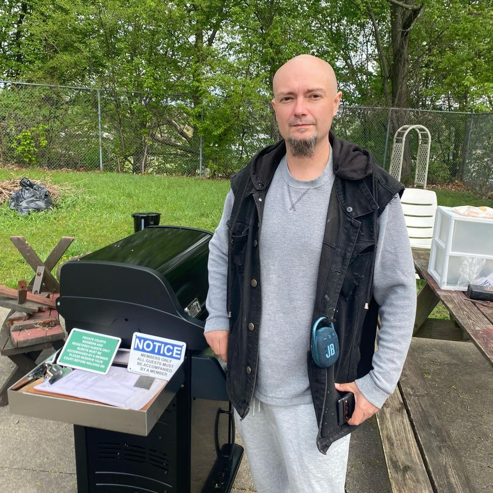

Mobile uploads
I’m REALLY happy to let you know that our warming center is going to stay open through the weekend.
That’s all thanks to this guy, Ryan Scanlon.
Ryan and I have had a bumpy past. But a few days ago he messaged me and asked me if I would possibly have a place for him to continue to do his work of homeless outreach, a big part of which are these amazing biscuits and gravy he makes.
That took a lot of humility on his part. He’s a very proud guy. But he did it so he could continue to do his work.
I was really excited because I’m taking my kid back to college this weekend and I didn’t feel like I could keep the place open while I was away.
Ryan was attacked by a homeless man while he was serving his biscuits and gravy outside a few weeks ago. John is truly psychotic and is a danger to others. He should not be on the streets. But that’s the world we live in.
John attacked Ryan because someone had given Ryan’s son a coat to wear because it was cold. John believes everything in the world is his, that truly is his belief. So that coat was his and he attacked Ryan because his son was wearing it.
Most people quit when they are wronged by the homeless community. It makes sense. Why would you help someone who steals from you, beats you, and destroys your work?
On a long enough timeline, I assure you, you will be wronged over and over again.
But, of course, Ryan wasn’t going to stop. He just wanted to be inside so he could feel a little more secure.
If you stick with this work long enough one of the traits you learn is humility.
The city is against you. The people you serve are self-destructive (like all of us). You don’t feel like you are making one ounce of difference. Nothing seems to change.
But you just keep doing it because it needs to be done.
You learn that some people won’t be grateful. In fact, they will try to destroy all of your work. At first you get angry. But eventually you get accepting.
It is what it is.
You just keep doing the work because there are American citizens who are cold, hungry and are plagued by addiction. We don’t help suffering people in this country. That’s wrong. So you just keep doing the work.
Thanks Ryan!